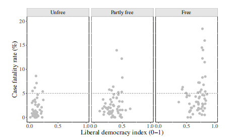
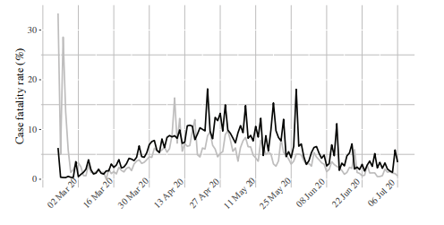
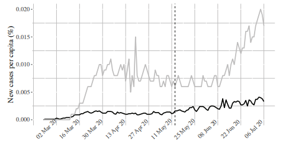

收录于合集 #美国研究 24个

作品简介
【作者】 Carla Norrlöf，芬兰国际事务研究所客座研究教授，多伦多大学政治学副教授，梅西学院高级研究员，国际问题研究所研究员。其研究方向为国际合作理论，特别关注大国，尤其是美国在货币、贸易和安全领域的霸权。
【编译】 刘瑛琛（国政学人编译员，上海国际问题研究院硕士研究生）
【审校】 张曼娜 常佳艺
【排版】 高辉
【美编 】游钜家
【来源】 Norrlöf, C. (2020). Is COVID-19 the end of US hegemony? Public bads, leadership failures and monetary hegemony. International Affairs , 96(5), 1281-1303.
期刊简介
《国际事务》是国际关系领域的一流学术期刊，也是多学科综合性学术期刊。本刊于1992年由伦敦皇家国际事务研究所查塔姆学院(Chatham House)创立，内容来源广泛，力图囊括业内专家、学术新秀对重点、热点问题的最新思考。2019年期刊影响因子为3.705，在95个国际关系类刊物中位列第4名。
新冠疫情会终结美国霸权吗？公共劣品、领导权的失败与货币霸权
Is COVID-19 the End of US Hegemony? Public Bads, Leadership Failures and Monetary Hegemony
Carla Norrlöf
内容提要
新冠疫情是压垮美国霸权的最后一根稻草吗？作者将新冠疫情概念化为“公共劣品（public bad）”，关注了20和21世纪最重大的一个议题： 美国霸权衰落的条件及其与集体行动、国际机制和自由主义国际秩序间的关系。
在国内层面，作者分析了未能有效控制新冠疫情这一公共劣品如何损害了美国保卫其公民健康和国内经济的能力，而这正是美国发挥国际领导力的基础。在国际层面，作者阐明了美国是如何在放弃世界卫生组织（WHO）的同时，将这场危机用作战略武器以强化其反对人口自由流动的坚定立场。在疫情期间，美国的领导权被限制在货币领域。未能在多个领域施加领导权对美国霸权产生了真正的挑战。因为新冠疫情与其他挑战不同，美国几乎没有机会将公共卫生危机的成本外部化。然而，在作者看来，美国霸权的替代性选择仍然没有出现。
文章导读
01
作为“公共劣品”的新冠疫情
在这一部分，作者描绘了疫情在全球的分布，并阐明了我们对新冠病毒的认知、病毒的致死性与其在不同政体类型间的扩散。作者将新冠疫情概念化为“公共劣品”，并将其与霸权理论所基于的公共产品（public good）假设进行了对比。
**
**
新冠疫情的黑箱
人口数据的差异与数据的局限性解释了一些国家在已披露病例的死亡率方面所存在的差别。但现有的新冠疫情的数据还存在着相当大的选择性偏差。 三个主要的问题使得对国家的评估与国家间的对比变得困难。
首先，不同国家在用以收集数据的资源、报道能力与透明度等方面有着相当大的差别。
其次，不充分的检测产生内在偏误，因为我们并不知道这些病例的广泛程度。 大多数国家所拥有的资源仅够检测重症患者。但是，来自中国的证据却表明，78%的新冠感染者无症状。因此，这是一个非常大的问题。迄今为止，只有很少的几个国家在全国范围内进行了随机检测。没有大规模检测或全国范围内的随机检测，我们就无法知道病例的真实数字、疫情的扩散程度与病毒的致死性。
第三个问题是，不同的国家在报道上有所差异。 一些国家没有验证患者的真实死因就将其计入新冠病毒死亡病例。一些国家，例如美国，其新冠病毒死亡病例数目基于死亡证明，因此严重依赖主治医师或病理学家的判断。还有一些国家，仅报道发生在医院的新冠病毒死亡病例，而忽视那些发生在其他场所（如私人寓所与养老院）的死亡病例。
新冠疫情是一种自由诅咒吗？
**** 在这一部分，作者使用两种不同的自由民主政体衡量标准，讨论了自由民主政体、病例增长率与死亡病例之间的关系。 作者这样做出于两个原因：首先，作者试图判断开放社会是否在疫情面前更加脆弱；其次，如果相较于其他政体类型，自由民主政体的确受疫情影响更加严重，那么就很难找到一个自由民主政体替代美国霸权。
尽管大部分国家（除了美国）都采取了早期措施以减缓新冠病毒的扩散速度，但疫情还是在民主国家中迅速扩散。图1根据自由之家（Freedom House）的分类，将各国的病例死亡率与自由水平联系了起来。自由之家的全球自由程度评分将不同国家划分为“自由”、“部分自由”与“不自由”三类。同时作者还使用了V- Dem评分在连续的刻度上评估自由民主政体的程度。 如图1所示，到2020年7月底，大部分新冠病例死亡率超过5%的国家在自由之家的分类中为“自由”。

图1：病例死亡率与民主水平
正如前文所言，我们需要注意数据的可信度和可比较性，因此在涉及“自由诅咒”这一论断时也要加以小心。而且自由民主国家的选民可以通过选票惩罚错报或谎报疫情数据的恶劣行为。 综合以上原因，作者否认了新冠病毒更容易在自由民主政体传播与自由民主国家的新冠死亡率更高等说法的可能性。同时，作者承认，在一个相互依存与相互联系的世界，货物、服务、资产与人都可以相对自由地跨境流动，这可能加速并放大了自由民主国家的病例死亡率。 作者认为，那些居住在开放、更好地融入国际社会的国家的人，感染病毒的风险可能更高。 因此，正如图1所示，病例死亡率随着民主程度的提高而上升。
随时间发展，美国病例死亡率与其他民主政体的病例死亡率逐渐趋同，但要更低一些，并且峰值也要少一些（详见图2）。然而，作者认为，随着最近美国病例的爆发，美国的病例死亡情况必将恶化。图3则将美国与其他自由民主国家的病例增长率进行了对比。美国的确诊病例增长更为显著。作者认为，相较于其他自由民主国家，不能控制新增病例表明了美国领导权的失败。尽管其他自由民主国家的疫情爆发得更早（这部分解释了为何这些国家确诊病例增长得较为平稳），但是2020年5月美国许多州过早地重启经济与公共场所更可能是其确诊病例急剧增加的主要原因。

图2：美国与其他自由民主国家的平均病例死亡率[1]

图3：美国与其他自由民主国家的病例增长率[2]
[1],[2]：图中灰线代表美国，黑线代表其他民主国家。
将新冠疫情概念化为“公共劣品”
作者认为，将新冠疫情概念化为“公共劣品”具有领导性意义。 公共劣品与公共产品都具有两种特性。第一种特性，非竞争性，即一国对公共产品的消费并不会妨碍其他国家也消费该产品。第二种特性，非排他性，指一国无论是否对公共产品产生贡献，都不可能被排除在公共产品的消费过程之外。我们可以将公共劣品看作是公共产品的恶性表现。
新 冠疫情可以被视作公共劣品。 首先，它是非竞争性的，因为一个人被感染并不能阻止其他人也被感染。其次，在没有疫苗的情况下，新冠病毒也是非排他性的，因为没有人可以排除被感染的可能性。根据第一个特性，国家面临着公共卫生与经济两重竞争。当一些国家采取封锁和其他安全措施抗击疫情时，它们的国内经济产出与国际贸易额会下降。所以在开放的条件下，那些不去规避新冠疫情这一公共劣品的国家会对其他国家规避公共劣品的能力产生负面影响。但是，根据第二个特性，新冠疫情却处在公共劣品与俱乐部劣品之间。尽管在经济领域总是存在着某种竞争，但在公共卫生领域，国家却可以通过关闭边界、限制人口流动进行排他。因此，不抗击新冠疫情的国家没有机会在公共卫生领域搭其他国家的便车，它们只能搭其他国家限制经济的便车。这会产生广泛的影响。
相较于其他公共劣品或公共产品，美国在应对新冠疫情上未能成功地发挥领导权可能会产生更大的风险。 美国政府没能充分地管控疫情会对其公民健康和国内经济产生实质性结果，而这潜在地危及了美国使用其霸权地位提供公共产品的能力。 同时，新冠疫情这一公共劣品已经被战略性地用以损害美国开放边界的承诺。
02
霸权与新冠疫情
在这一部分，作者讨论了美国政府在疫情爆发后六个月内采取的国内与国际措施，旨在评估美国政府规避新冠疫情这一“公共劣品”的举措。
损害美国的合法性
直到2020年3月中旬，特朗普总统都在忽视来自其政府、美国智库和世界卫生组织的警告，坚持否认新冠病毒的扩散规模、事态严重性与致死性。除了应对危机行动缓慢，美国政府还试图破坏关于新冠病毒起源的科学共识，并向美国智库施加压力以迫使他们支持“病毒起源于武汉实验室”这一未经证实的理论。但科学家们一致同意，新冠病毒诞生于实验室是不合理的。
通过忽视所有提醒极可能发生公共卫生危机的标志与坚持否认科学，美国对自身合法性造成了巨大打击。
国内措施
在一些报告中，新冠疫情的经济后果十分严重，甚至超越了2008年经济危机所带来的灾难。接下来，作者讨论了疫情所产生的极度混乱与美国政府所采取的用以缓解经济下行的措施。 尽管采取了这些不同寻常的措施，但反应与实施的缓慢、以及民众获取医疗资源能力的潜在不平等，一并加剧了新冠疫情这一公共劣品所造成的破坏，最终导致美国霸权的国内基础岌岌可危。
在这种程度的疫情中，我们可以预见到家庭收入与储蓄的下行压力，这进一步降低了需求并造成失业。因此，2020年3月25日，美国参议院通过了《新冠病毒援助、救济和经济安全法案》（the Coronavirus Aid, Relief, and Economic Security，简称CARES）。这套救济措施包括四个方面：援助美国工人与家庭，援助小微企业，保存美国工业的就业机会与援助州政府及地方政府。但是，这套措施在实施中遭遇了诸多问题，比如资金不成比例地被用于救助小微企业、技术故障、复杂的申请流程等等。美联储也采取措施以提振美国经济，比如将联邦基金利率目标区间下调至0至0.25%，购买国债和抵押担保证券以及出台一系列刺激借贷的措施等。
美国收入与财富的不平等分配加剧了疫情所带来的挑战。尽管特朗普任期内这种不平等没有加剧，但是现在有健康保险的美国人更少了。同时，特朗普政府还进行了几项决策以削减社会福利支出，特别是在医疗保障方面。大量无法获得医疗保障、或是由于经济原因无法承担医疗保障与推迟就医的美国人不仅自身面临风险，同时也对全体美国人造成威胁。
由于在遏制公共劣品与提供公共物品以阻止新冠疫情扩散方面无能为力，美国政府未能保卫其公民的健康，从而削弱了美国霸权的经济基础。
国际措施
美国政府分裂的国际措施既有全球公共劣品预防的领导权“缺位”，也有在全球货币领导权上的成功。
第一，收紧移民规定。 就像其他国家，特朗普政府也通过限制入境美国来应对疫情。但是，尽管盟国（例如申根国家、加拿大、墨西哥等）所报道的病例更多，限制来自这些国家的旅客却花费了更多时间。特定的移民措施使人们回想起总统关于需要严格的“经济安全”政策的竞选承诺。惊人的是，这些措施并非旨在保卫美国人民的公共卫生，而是旨在通过加强2017年美国国家安全战略来解决疫情带来的影响。而美国2017年国家安全战略试图将“经济资产作为国家安全的支柱”，重启美国大战略。
第二，放弃国际机制。 2020年4月7日，特朗普总统表示，他将“暂停”美国对世界卫生组织（下文简称WHO）的资助，批评该组织应对危机行动缓慢且“以中国为中心”。7月6日，美国宣布正式退出WHO。 美国与WHO分道扬镳的后果将有多严重？美国的退出将使其在面对公共卫生危机时更加脆弱，因为美国专家将不再有渠道在机制内进行信息交换。再加上国内对疾病控制与预防中心（CDC）资金的削减，退出WHO代表着美国在全球公共卫生危机前放弃领导权，这可能使美国更难以管控新冠病毒与未来的卫生“公害”。 这产生了两个附属问题。首先，抗击卫生“公害”对美国霸权有多重要？正如前文所述，美国政府对新冠病毒这一卫生“公害”的不负责任可能会使其难以保卫美国公民健康与经济良好运转，从而侵蚀美国霸权的基础。其次，美国同WHO的联系及美国在WHO的领导权对美国霸权和自由主义国际秩序的延续有多重要？作为一个多边机制，WHO制订了公共卫生规范并监督规范的实施。美国单方面放弃WHO显示出美国不再想在公共卫生治理领域扮演关键角色，因此势必会削弱自身本就不确定的霸权承诺。然而，三个因素限制了当前紧张局势对美国霸权和自由主义国际秩序的影响。首先，如果现任总统（即特朗普）没有赢得第二任期，以上决策可能会被推翻。其次，WHO的机制化程度不高，它更多是充当科学与政策交流的场所、进行协作的渠道，从而推动各国自愿实施已确定的公共卫生规范。第三，WHO从未成为美国霸权地位或自由主义国际秩序的中心。
第三，充分利用美元霸权。 美联储不只是美国的中央银行，同时扮演着国际危机期间的“最后贷款人（lender of last resort）”角色。根据金德尔伯格（Charles P. Kindleberger）的理论，霸权国家应该在危机期间提供流动性与反周期贷款。在疫情或金融危机期间，注入美元对平息金融市场因大规模资产抛售而引起的恐慌和混乱十分必要。美元掉期预示着中央银行间的合作，并且出于其强有力的信号效果而能缓解汇率压力。但只有美联储拥有权威通过印发美元来满足全球对美元的需求。这种政府影响力对市场决策具有巨大的影响，且是结构性权力的一种形式。 疫情期间，美联储延长掉期协议、急剧削减利率，明确地实施了这种有效的货币领导权。 美国的货币领导权来自于美国的货币和金融霸权，并且成为美元霸权自身的重要源泉。作者认为，任何没有考虑美国金融地位就声称美国失去霸权的研究都是不成熟的。
03
结论
本文通过将新冠疫情概念化为“公共劣品”，分析了全球疫情对美国霸权地位的负面影响。但是，作者认为，新冠疫情这一公共劣品不同于其他公共劣品或是组成自由主义国际秩序的公共产品（如国际安全、美元体系等），它具有一定的竞争性且可以排他，因此更像是一种俱乐部劣品。这些特性使各国要么解决新冠疫情这一公共劣品，要么面对严重的负面影响。
全球霸权国美国将新冠疫情当作其他相似种类的国际关系问题，认为未能规避公共劣品或提供公共产品的成本可以外部化，最终没能管控住新冠疫情这一公共劣品。应对疫情的失败加剧了美国的公共劣品问题，危及到美国霸权的国内基础——没有生存威胁的人民与运行良好的经济。这反过来威胁了美国提供全球公共产品的能力。同时，美国政府还战略性地利用新冠疫情损害美国开放边界的承诺。
政策合作的失败与美国退出WHO将使美国面临公共卫生危机时更加脆弱。但是，作者认为，美国可以在退出WHO的决策上反悔，因此这一决策对美国霸权的影响不会太严重。事实上，通过美国的货币领导权提供宏观经济稳定性是自由主义国际秩序最后一个机制化的方面。而美国也的确在这方面进行了明确的、有决断力的领导。美联储扮演了“最后贷款人”的角色，如霸权稳定论所预测的一样稳定了资产市场与外国货币。作者认为，美国完全可以通过货币金融领导权来扩大霸权。但关键点是，新冠疫情侵蚀了美国的国内经济基础，这最终会损害美联储作为“最后贷款人”稳定全球经济的能力。
然而，美国要失去其已有的霸权国地位，需要有一个替代者。但是，在作者看来，目前还没有国家能够替代美国。
译者评述
本文作者将新冠疫情概念化为公共劣品，通过分析疫情期间美国的国内或国际应对举措，试图回答“新冠疫情是否会终结美国霸权”这一问题。作者的研究有可圈可点之处，但也存在许多漏洞。
首先，在“新冠疫情是一种自由诅咒吗”这一小节中，作者从数据的可信度与可比较性上为自由民主国家令人失望的抗疫表现进行了辩护。实际上，自由民主政体与受疫情影响的严重程度间的关系是另一个值得深入探讨的问题。在这个需要更多量化分析的问题上，作者简单的辩护显得苍白无力，特别是他还没有把许多自由民主国家拥有更为丰富的医疗资源这一事实纳入到考虑范围内。
其次，分析美国在疫情期间的国际措施时，作者对这些措施给美国霸权地位带来的负面影响认知还不够。在作者看来，退出WHO对美国霸权和自由主义国际秩序的影响有限，为此作者给出了三个理由。但是，退出WHO这一行为不仅仅意味着美国放弃在公共卫生领域的领导权与给美国自身应对疫情带来挑战，更多是影响美国作为全球霸权而提供国际公共产品与主导多边国际机制的形象与声誉。尽管美国可以重新加入WHO，拜登在当选后也明确承诺了这一点。但美国在疫情期间表现出的不负责任与自私自利，会使其他国家难以相信美国能够“再次领导世界”，这对美国霸权的影响会更加严重与长久。另一方面，作者认为，美国有效地施加了自身在货币金融领域的领导权，稳定了全球金融市场。不过，作者在将新冠疫情概念化为“公共劣品”时，也承认了美国可以将疫情产生的经济成本外部化。作者似乎并未将美联储在疫情期间的量化宽松政策与美国转嫁疫情产生的经济成本两者联系起来。实际上，作者认为美国明确有效地实施的货币金融领导权在刺激美国经济与稳定全球金融市场的同时，也在将通胀和债务压力传递给世界，许多国家都认识到了这一点并寻求改变。因此，从长远来看，这一举措是在透支美元信誉，最终将伤害到美元霸权。
但是，本文作者将美国的结构性金融权力纳入分析，以及“任何对美国霸权可靠的替代性选择都必须同时在经济上和军事上展现出强大的实力，且能够取代美国金融基础设施”的观点，为分析新冠疫情对美国霸权的影响提供了更多值得思考的东西。无独有偶，国内学者张家栋也认为，“世界格局的核心是美国，美国霸权……核心要素是美元、美军和科技优势”，“疫情没有挑战世界格局的核心要素”。[1]
参考文献
[1]张家栋.疫情难以对世界格局构成重大影响[N].工人日报,2020.04.10.
文章观点不代表本平台观点，本平台评译分享的文章均出于专业学习之用, 不以任何盈利为目的，内容主要呈现对原文的介绍，原文内容请通过各高校购买的数据库自行下载。
**
**
添加 “国小政”微信
获取最新资讯


国政学人
支持学术公益与知识传播
微信扫一扫赞赏作者 __赞赏
已喜欢，对作者说句悄悄话
取消 __
发送给作者
发送
最多40字，当前共字
上一页 1/3 下一页
长按二维码向我转账
支持学术公益与知识传播
受苹果公司新规定影响，微信 iOS 版的赞赏功能被关闭，可通过二维码转账支持公众号。